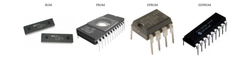
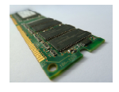
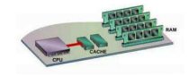

- Tipos de Memoria
Existen distintos tipos de memoria.
El principal método de clasificación es como almacenan los bits:
- ROM (read only memory) - no volátil
- SRAM o cache
- RAM (random acces memory) - volatil
- Memorias externas...
- ROM (Read only memory)
No es volátil
Memoria de tipo secuencial.
Originalmente (80's) el SO venia cargado en la
ROM
En la ROM se almacena fundamentalmente la bios, y otros programas y configuracion de incio

- RAM (Random Access Memory)
Memoria de acceso aleatorio, rápida pero volátil
Es el lugar a donde van a ejecutarse y a permanecer activos los diversos programas,
incluyendo el SO
Los dos tipos principales de memorias RAM son:
- DRAM (Dynamic RAM)
- SRAM (Static RAM)
- Más rapida
- Más compleja
- Mayor costo

- Cache
- Nivel 1:
- Se encarga de almacenar datos e instruccioens frecuentemente utilizadas. Se
encuentra en el núcleo del microprocesador y su capacidad es de hasta 768 kb.
- Nivel 2:
- Se encarga de almacenar datos de uso frecuente, siendo más lenta que la caché L1,
pero más rápida que la memoria principal (RAM). Se encuentra en el procesador, pero no en su núcleo.
- Nivel 3:
- Es más rápida que la memoria principal (RAM), pero más lenta que L2. En esta
memoria se agiliza el acceso a datos e instrucciones que no fueron localizadas en L1 o L2.

- Almacenamiento de datos masivos
Disco Duro (Interno/externo)
- Grande (memoria virtual para el procesador)
- Tradicionalmente es un soporte magnético
- Acceso secuencial - mucho más lenta
- Actualmente siendo reemplazado por discos de estado solido (SSD) - Memoria Flash
Pendrives
Otras memorias
Discos ópticos (cada vez menos)
- ¿Cuál utilizamos?
Las memorias:
- Accesibles y mcuha capacidad, pero lentas
- De mayor capacidad y rápidas, pero muy caras
- Rápidas y accesibles, pero de poca capacidad
Por tanto se trabaja con una combinación de memorias.
- Niveles
Primer nivel
- Cache (muy rápidas, cara, poco tamaño, poca capacidad)
Segundo nivel
- Ram (rápida, económica, tamaño medio, capacidad media)
Tercer nivel
- Discos y otros (lentos, muy baratos, tamaño mediano a grande, gran capacidad)